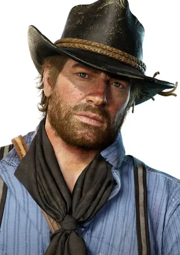
Você assume o papel de Arthur Morgan, um fora da lei endurecido e braço direito de Dutch van der Linde, líder da gangue Van der Linde. Após um assalto dar terrivelmente errado na cidade de Blackwater, a gangue é caçada por agentes federais e caçadores de recompensas. A narrativa aborda lealdade, moralidade, declínio e a busca por redenção em um mundo que não quer mais o estilo de vida dos cowboys.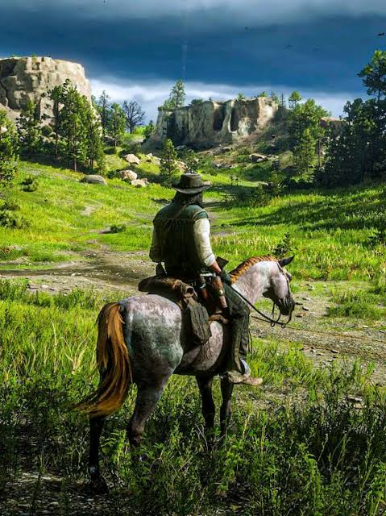
O mapa do jogo é um dos ecossistemas digitais mais realistas já criados. Cada detalhe foi desenhado para fazer o mundo parecer vivo: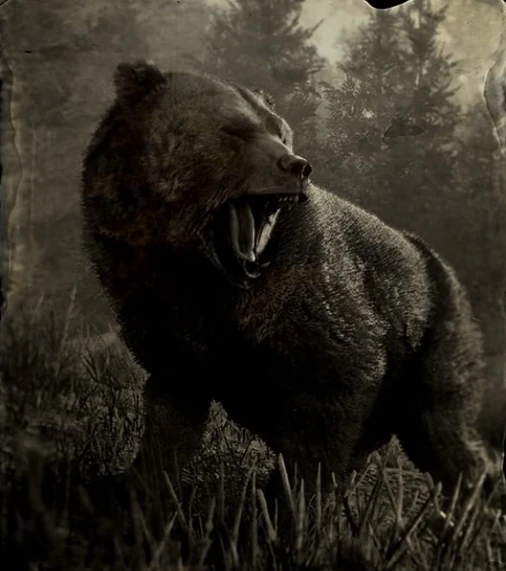
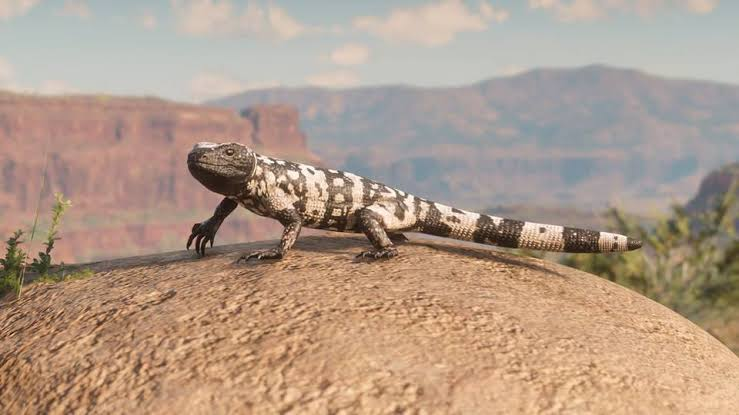
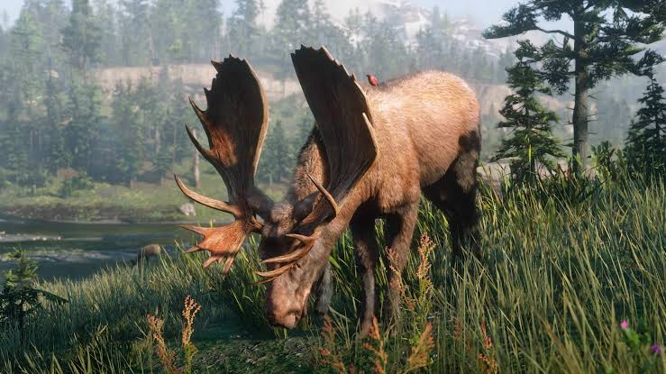
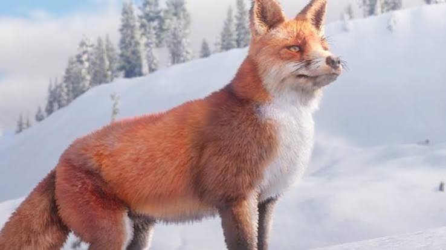
São centenas de espécies de animais que interagem entre si (predadores caçam presas, pássaros reagem a barulhos).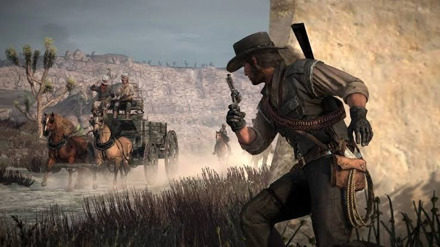
As roupas de Arthur ficam sujas de lama ou sangue, o cabelo e a barba crescem em tempo real, e as armas precisam de manutenção para não enguiçar.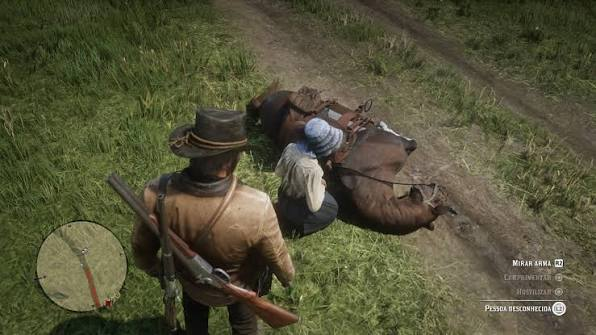
Você pode conversar, saudar, insultar ou assaltar praticamente qualquer personagem não-jogável (NPC) que encontrar pelo caminho.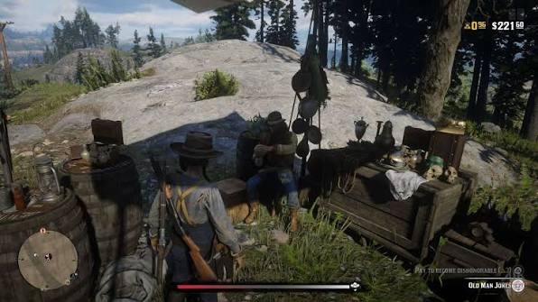
Suas escolhas (ajudar estranhos ou assassinar inocentes) mudam a forma como o mundo reage a você, alterando diálogos, preços em lojas e até o final da história de Arthur.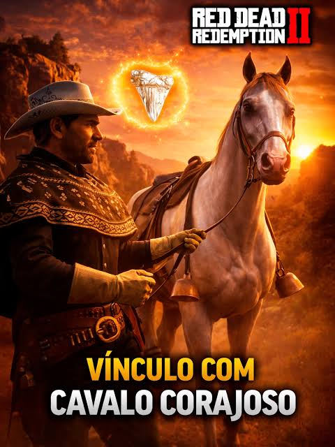
Seu cavalo não é apenas um veículo. Você precisa alimentá-lo, escová-lo e acalmá-lo. Quanto maior o vínculo, melhores serão os atributos e comandos disponíveis. não possui apenas um vilão principal, mas sim um conjunto de forças e personagens que representam a destruição da gangue Van der Linde. A ameaça vem tanto de traidores internos quanto do avanço da civilização moderna.
não possui apenas um vilão principal, mas sim um conjunto de forças e personagens que representam a destruição da gangue Van der Linde. A ameaça vem tanto de traidores internos quanto do avanço da civilização moderna.
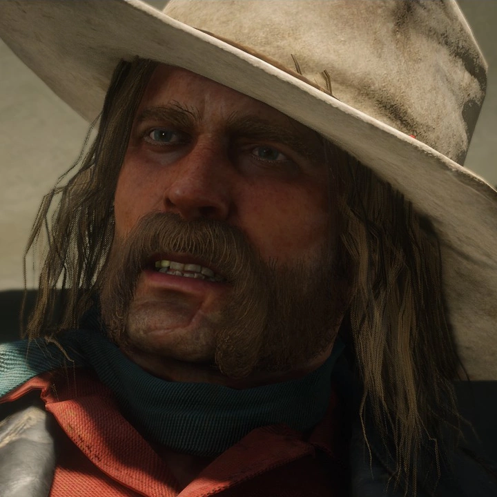
O vilão mais odiado e a verdadeira força destrutiva dentro do grupo. Micah é um psicopata egoísta, racista e cruel que não possui lealdade a ninguém além de si mesmo. Ele manipula a mente de Dutch van der Linde, alimentando a sua paranoia para dividir a gangue. Mais tarde na história, revela-se que ele atuou como informante da Agência Pinkerton, selando o destino de todos.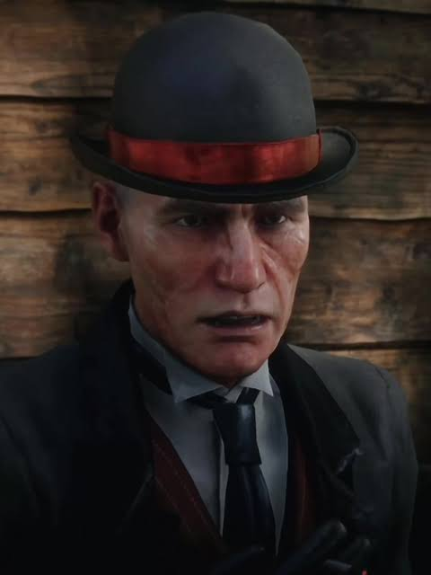
O líder da Agência de Detetives Pinkerton contratado para caçar a gangue. Ao contrário de um vilão clássico, Milton representa a lei, a ordem e o progresso industrial.Ele vê os fora da lei como selvagens que precisam ser extintos para que a civilização moderna floresça. Ele é implacável e persegue o grupo fanaticamente por todo o mapa.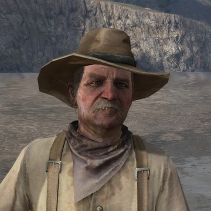
O braço direito de Milton. Ross é ainda mais cínico e impiedoso que seu superior. Ele não se importa em usar táticas sujas, ameaçar mulheres ou crianças para conseguir o que quer. (Nota: Ele se torna o vilão principal do primeiro Red Dead Redemption).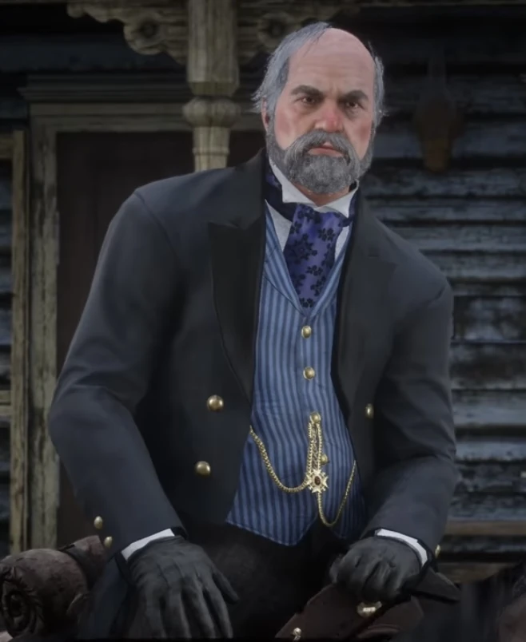
Um bilionário impiedoso do petróleo e das ferrovias que financia a caçada dos Pinkerton contra a gangue. Cornwall representa o capitalismo selvagem da virada do século. Ele destrói comunidades inteiras e explora trabalhadores e indígenas para aumentar sua fortuna. A gangue entra em seu radar após roubar um de seus trens logo no início do jogo.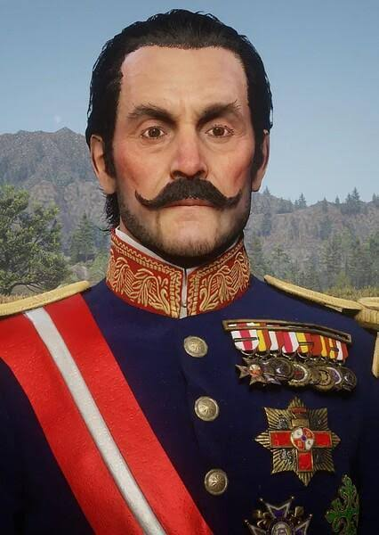
O governador tirânico e ditador da ilha caribenha de Guarma (onde Arthur e alguns membros da gangue naufragam no Capítulo 5). Fussar escraviza os trabalhadores locais nas plantações de açúcar e usa forças militares para manter seu controle cruel sobre a ilha.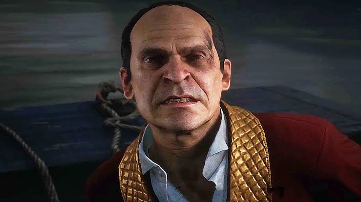
Um influente e arrogante chefe da máfia italiana que controla a cidade industrial de Saint Denis. Bronte suborna a polícia, controla os negócios locais e manipula a política. Ele vê Dutch e seus homens como caipiras ignorantes e os trai após fingir fazer negócios com eles, subestimando o perigo que a gangue representava.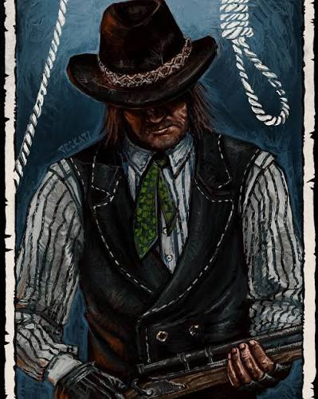
Líder dos O'Driscoll Boys, uma gangue rival massiva que compartilha uma rivalidade sangrenta de décadas com Dutch. Colm foca apenas no lucro rápido e trata seus próprios homens como descartáveis. A guerra entre as duas gangues gera várias das batalhas mais violentas do jogo.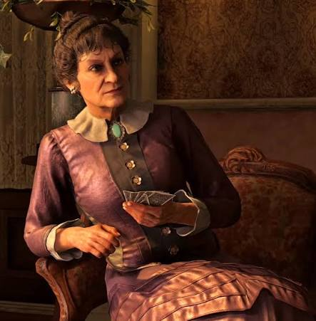
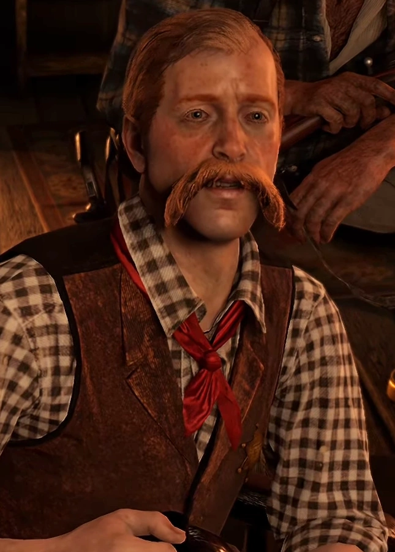
Os patriarcas de duas famílias ricas e decadentes do sul (em Rhodes) que vivem em uma guerra civil familiar desde a Guerra de Secessão por causa de um ouro perdido. Ambos tentam usar e trair a gangue de Dutch, o que resulta na destruição total de suas linhagens.